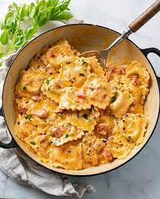

Ravioli Recipe

Description
A dish declared by many "The italian dish of the century"
A homemade masterpiece for you and the loved ones
Ingredients
Pasta
- 5 to 5-1/2 cups all-purpose flour
- 6 large eggs
- 1/2 cup water
- 1 tablespoon olive oil
- 1 tablespoon minced fresh oregano
- 1 garlic clove, minced
- 1/2 teaspoon salt
- 1/4 teaspoon pepper
Sauce
- 1 can (28 ounces) crushed tomatoes
- 1-1/2 cups tomato puree
- 1/2 cup grated Parmesan cheese
- 1/3 cup water
- 1/3 cup tomato paste
- 3 tablespoons sugar
- 2 tablespoons minced fresh basil
- 1 tablespoon minced fresh parsley
- 1 tablespoon minced fresh oregano
- 1 garlic clove, minced
- 1/2 teaspoon salt
Filling
- 1 carton (15 ounces) ricotta cheese
- 2 cups shredded part-skim mozzarella cheese
- 1/3 cup grated Parmesan cheese
- 1 large egg, lightly beaten
- 2 teaspoons minced fresh basil
- 1 teaspoon minced fresh parsley
- 1 teaspoon minced fresh oregano
- 1/4 teaspoon garlic powder
- 1/8 teaspoon salt
- 1/8 teaspoon pepper
Directions
- Place 5 cups flour in a large bowl. Make a well in the center. Beat the eggs, water and oil; pour into well. Stir together, forming a ball. Turn onto a floured surface; knead until smooth and elastic, 4-6 minutes, adding remaining flour if necessary to keep dough from sticking. Cover and let rest for 30 minutes.
- Meanwhile, in a Dutch oven, combine sauce ingredients. Bring to a boil. Reduce heat; cover and simmer for 1 hour, stirring occasionally.
- In a large bowl, combine filling ingredients. Cover and refrigerate until ready to use.
- Divide pasta dough into fourths; roll 1 portion to 1/16-in. thickness. (Keep pasta covered until ready to use.) Working quickly, place rounded teaspoons of filling 1 in. apart over half of pasta sheet. Fold sheet over; press down to seal. Cut into squares with a pastry wheel. Repeat with remaining dough and filling.
- Bring a soup kettle of salted water to a boil. Add ravioli. Reduce heat to a gentle simmer; cook until ravioli float to the top and are tender, 1-2 minutes. Drain. Spoon sauce over ravioli.
- Enjoy!